This example allows an introduction to the use of the tool of hydrologic calibration in Expert module. The model starts with the previous model built in Example 2, with the same parameters. The calibration will be based on the comparison between observed and simulated discharges. Through this example (Figure 19.1), five parameters are calibrated. Two parameters are calibrated for the GSM object and three for the HBV model:
GSM-An, the degree-day snowmelt coefficient
GSM-Agl, the Degree-day icemelt coefficient
HBV-FC, the maximum soil storage capacity
HBV-SUMax, the upper reservoir water level threshold
HBV-Kr, the near surface flow storage coefficient
The range of values for the calibration can be defined based on the values given as regular range in Appendix A. The temperatures, the precipitations and the outflow observed are in the database “Database manual”. A uniform and null ETP is assumed for this example (the user can check the selected ETP method in the RS MINERVE Settings).
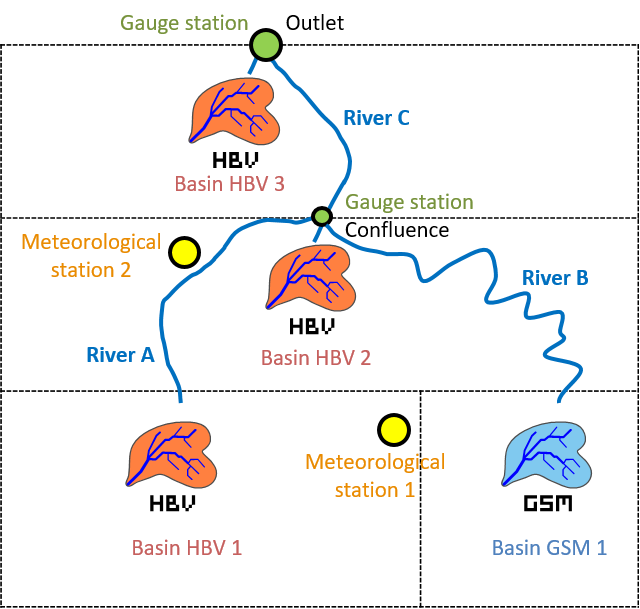
19.1 Objective of Example 4
The wanted result is the new values for the calibrated parameters of the GSM and HBV models after the automatic calibration. For the calibration, observed and simulated data are compared at the confluence point and at the outlet for a period between the 01.09.2011 00:00 and the 31.08.2012 00:00. In this example, the calibration uses an Objective Function (OF) with a weight of four for the Nash indicator, two for the Pearson Correlation Coeff indicator, four for the Relative Volume Bias indicator and zero for the other indicators. The “Simulation time step” and the “Recording time step” are fixed to 600 s.
19.2 Resolution of Example 4
For the calibration, it is necessary to add two source objects 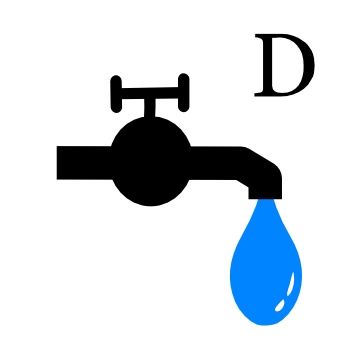 to have a reference flows (observed discharges) at the confluence point and at the outlet. Two comparators objects are also necessary to compare the results of the simulation with the reference data (observations) coming from the source object.
The Confluence and the Source 1 are connected to the comparator 1. The Outlet and the Source 2 are connected to the Comparator 2. The relations created can be visualized by double clicking on each blue arrow (Figure 19.2, Figure 19.3, Figure 19.4).
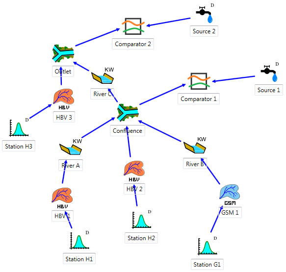
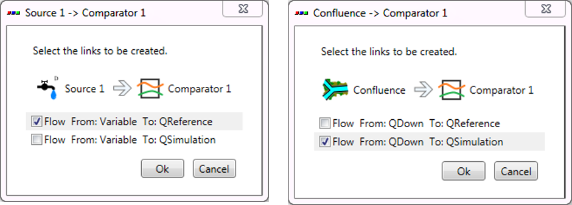
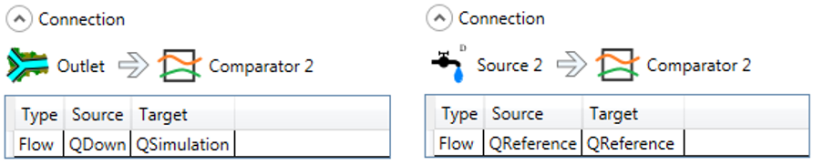
Constructed model can be now saved clicking in the button  and giving a name to the .rsm file (e.g. “Example4.rsm”).
and giving a name to the .rsm file (e.g. “Example4.rsm”).
Next, the meteorological data have to be loaded: the dialog box of the database is opened clicking in  (Figure 19.5) for loading the corresponding database file (“Database manual.dbx”).
(Figure 19.5) for loading the corresponding database file (“Database manual.dbx”).
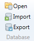
The user can visualize or modify the database (Figure 19.6).
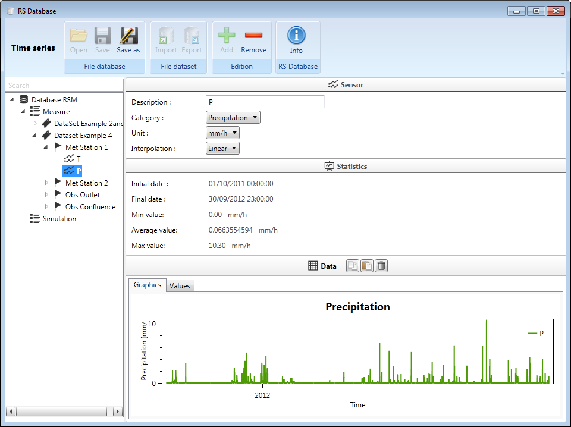
Once the database is loaded, the user can connect the database to the hydrological model. For achieving this purpose, the user has to choose the correct data source in the corresponding frame (Figure 19.7): the group “Measure” and the dataset “DataSet Example 4” for the current example.
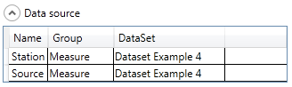
Then, the user has to choose the series identifier for each Source object (the series of the database which contains the observed discharges) as shown in Figure 19.8.
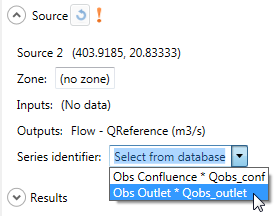
In order to clarify the use of the Calibrator tool, the different objects of the model will be aggregated in 2 zones:
Zone 1: all the objects upstream the “Confluence” object (including the “Confluence”).
Zone 2: the rest of the objects of the model.
For that, the user has to double-click on each objects of the Zone 1 and change the Zone form 0 (default) to 1 as shown in Figure 19.9. The user will proceed similarly for the Zone 2.
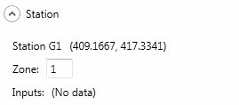
Finally, the module of hydrologic calibration can be launched by clicking on Expert \(\rightarrow\) Calibrator in the Modules frame (Figure 19.10).
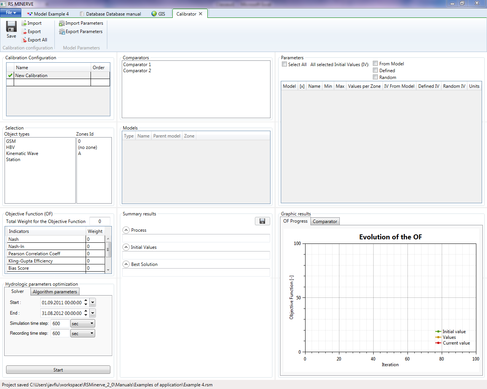
Two calibration configurations can be created, one for each zone of the model (Figure 19.11). Give the order 1 to the calibration of Zone 1 (this one will be executed first) and order 2 to the calibration of Zone 2 (this one will be executed next).
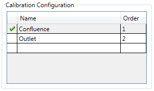
For each calibration configuration, in the Selection frame the HBV and GSM objects types are selected with the corresponding zone (Figure 19.12).
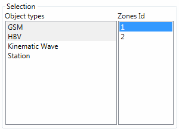
The parameters to calibrate are checked in the Parameters frame (Figure 19.13). For each of them, the minimum and maximum values are:
GSM-An: 0.5 – 10
GSM-Agl: 0.5 – 10
HBV-FC: 0.05 – 0.65
HBV-SUMax: 0 – 0.1
HBV-Kr: 0.05 – 0.5
The source of the initial values is selected as random for the parameters to calibrate and from model for the others.
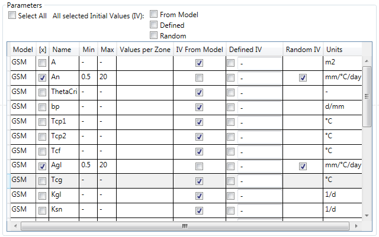
In the Comparators frame, select alternatively the comparator whose the observed discharges will be used for the calibration of the corresponding zone (Comparator 1 for the first calibration configuration, and Comparator 2 for the second one).
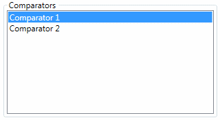
In the Objective Function (OF) frame the weight of the Nash and Relative Volume Bias coefficient are settled to 4 and the weight of the Pearson relative coefficient is 2. The other coefficients are all settled to zero (Figure 19.15). The default algorithm parameters are used.
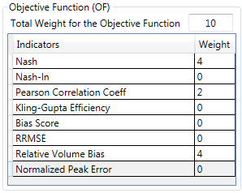
After specifying the calibration period in the Solver tab of the Hydrologic parameters optimization frame, the calibration configuration can be saved and then started.
At the end of the calibrations the final parameters obtained are collected in the current model. If the model is saved, the parameters are stored; if not, the hydrological model keeps preliminary parameters.
19.3 Results of Example 4
Once the calculation is finished (after approximately 1’300 iterations for the confluence calibration and 400 iteration for the outlet calibration), the best values obtained for the parameters can be visualized in the Summary results frame. From a maximum possible value of the Objective Function (OF) of 6, the best score provided by the algorithm is 5.448 and 5.560 for the confluence calibration and the outlet calibration, respectively.
Hereafter (Table 19.1 and Table 19.2) the results of the calibration (since the algorithm contains the random calculations, it is possible to obtain a similar but not exactly the same result).
| Initial Parameter | Initial Parameter | Best Parameter | Best Parameter | |
|---|---|---|---|---|
| Confluence | Outlet | Confluence | Outlet | |
| GSM - An | 6 | - | 0.761 | - |
| GSM – Agl | 7 | - | 0.500 | - |
| HBV – FC | Different values | 0.275 | 0.126 | 0.534 |
| HBV – SUMax | Different values | 0.0055 | 0.100 | 0.0781 |
| HBV – Kr | Different values | 0.3 | 0.281 | 0.152 |
| Initial Performance | Initial Performance | Final Performance | Final Performance | |
|---|---|---|---|---|
| Confluence | Outlet | Confluence | Outlet | |
| Nash | -26.38 | 0.87 | 0.89 | 0.91 |
| Nash-ln | -2.67 | 0.81 | 0.80 | 0.84 |
| Pearson Correlation Coeff. | 0.57 | 0.95 | 0.95 | 0.96 |
| Kling-Gupta Efficiency | -2.20 | 0.91 | 0.94 | 0.95 |
| Bias Score | -9.03 | 0.99 | 1 | 1 |
| RRMSE | 3.95 | 0.26 | 0.25 | 0.22 |
| Relative Volume Bias | 3.17 | 0.07 | 2E-5 | -6E-7 |
| Normalized Peak Error | 0.63 | 0.001 | -0.02 | -0.005 |
| OF | -117.06 | 5.12 | 5.45 | 5.56 |
The simulation fits pretty well the outflow observed (Figure 19.16). Thus, the new parameters after the calibration can be kept by saving the model.
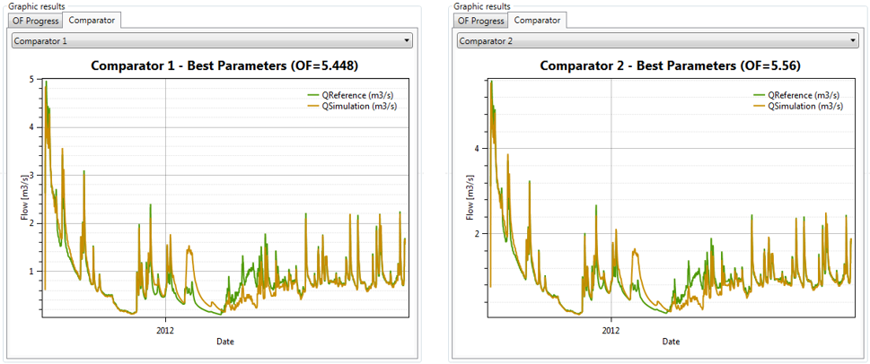